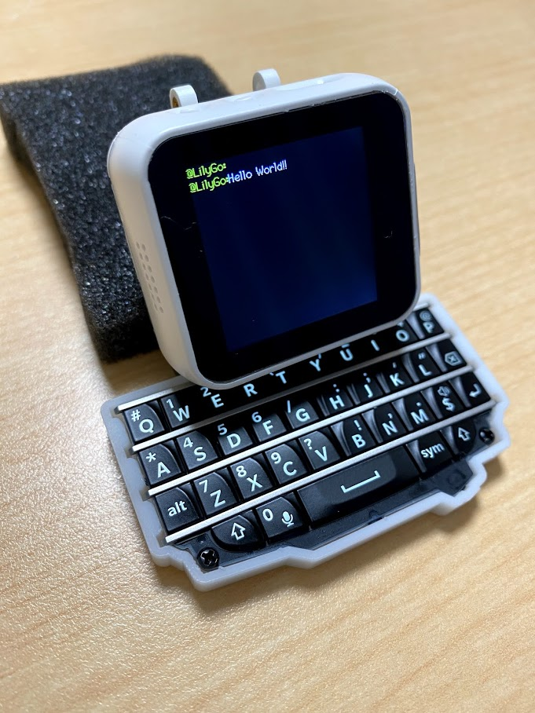
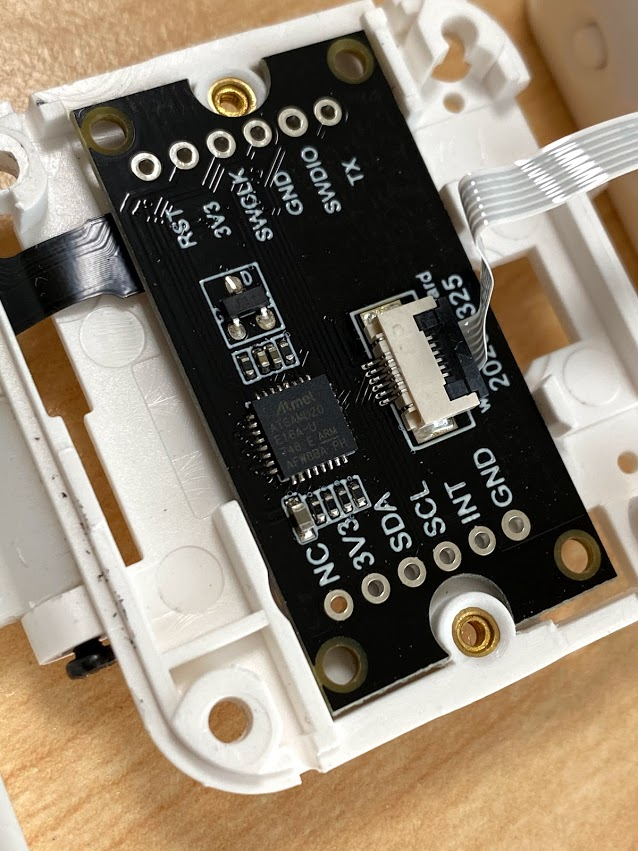
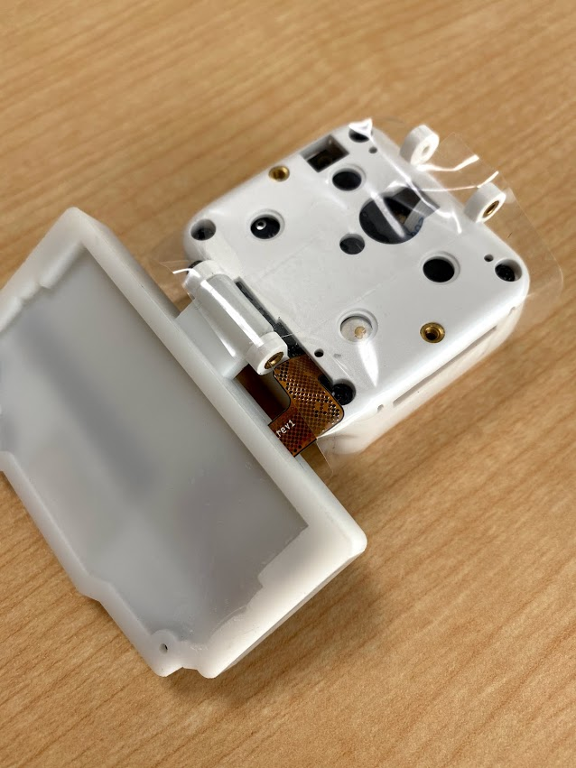
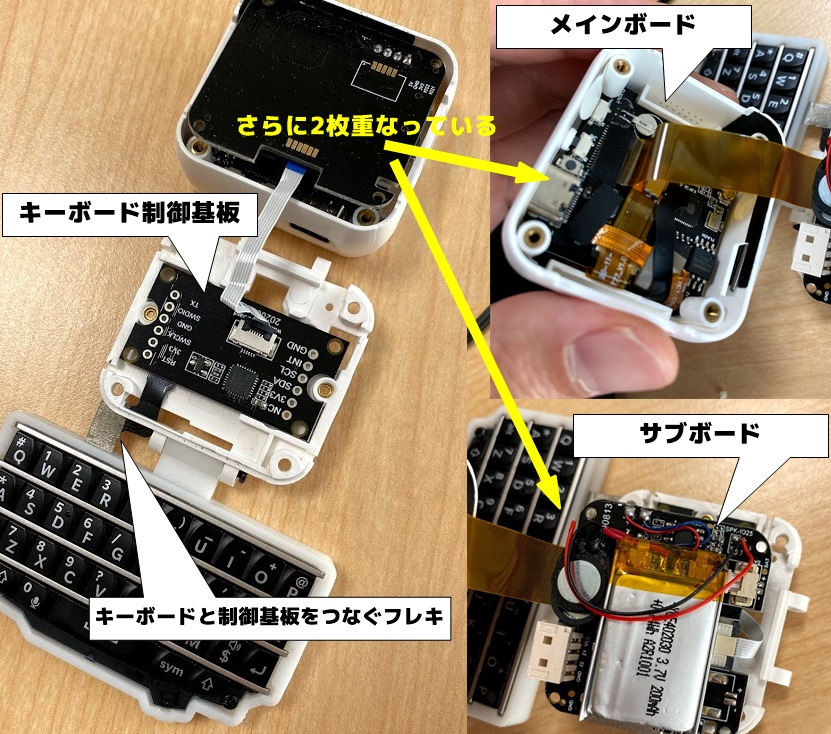
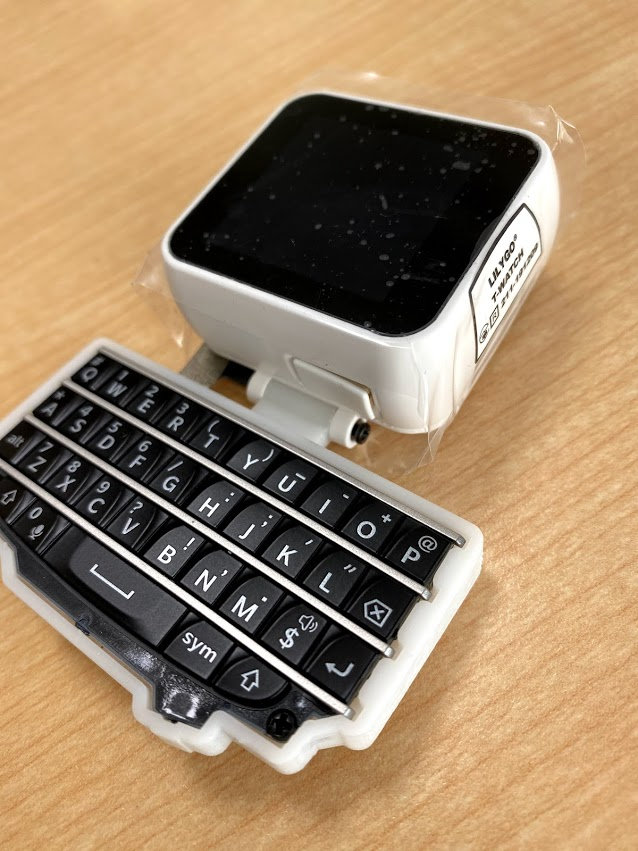
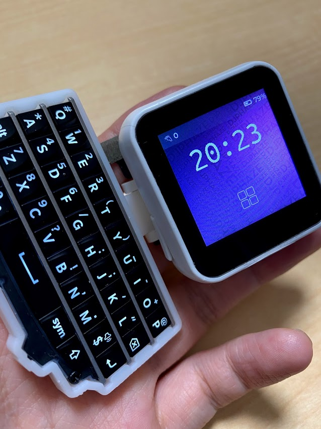
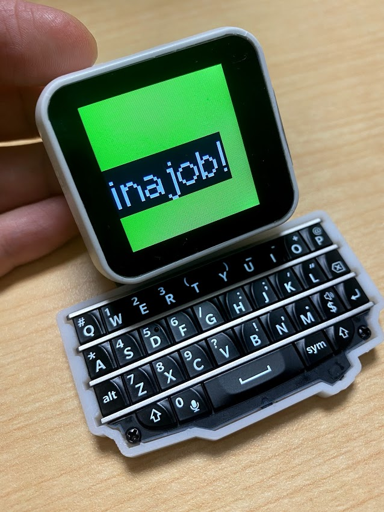

かわいいキーボード付きのESP32開発機 TTGO T-Watch Keyboard
この記事はBanggoodの提供でお届けします。
以前紹介したようにこのブログはBanggoodと提携させていただいており、今回紹介するTTGO T-Watch KeyboardはBanggoodからいただいたものとなります。 TTGO T-Watch Keyboardのレビューがしたい！と言ったのは自分なので、Banggoodが無理やりこの商品を押しているわけではなく、inajobの一押しアイテム！、という感じです。）
・・・ といういつもの前置きはそこそこに、TTGO T-Watch Keyboardについて紹介していきます。
そして、今回もこのブログのために2021/05/31まで利用できるクーポンを頂くことが出来たので、そちらも紹介します。
TTGO T-Watch Keyboard とは

TTGO T-Watch Keyboardは TTGO T-Watchという製品にキーボードのオプションが搭載された製品です。
TTGO T-Watchというのは、いわゆるスマートウォッチの開発キットです。とはいっても、普通のスマートウォッチと違うところは標準的なソフトウェアを持たないという点です。
普通のスマートウォッチ、例えばFitBitやApple Watchであれば、当然ハードウェアと、ソフトウェアはセットです。しかしこのTTGO T-Watchは開発用途という事で、標準的なソフトウェアを搭載せずに、ハードウェアのみの製品です。
ここまでのところで、ピンときた方もいるかもしれませんが、これはM5Stackとよく似たコンセプトの製品です。それどころか、メインのCPUがESP32出会ったりと、その構成も非常によく似ています。
さて、このTTGO T-Watchは、バンドをつけることで、（ちょっと大きな）スマートウォッチとして利用できるのですが、今回紹介する TTGO T-Watch Keyboardは、スマートウォッチのバンドを取り付ける部分に、小さなキーボードを搭載することで、ミニチュアのノートパソコンのように構成されたちょっと変わったガジェットです。
キーボードはI2CでTTGO T-Watch本体と接続されており、ライブラリを利用することで非常に簡単にキーボードからの入力をハンドリング出来ます。

といったところで、この製品の詳細なスペックを見てみましょう。
- メインCPU: ESP32
- USBtoシリアル変換: CP2104
- MicroSDカードスロット
- 16MBのQSPI接続のフラッシュメモリ
- メインCPU内蔵の520KBのSRAMと、外付けのPSRAM 8MB
- 電源ボタンと、もう一つ好きに使えるボタン
- 40MHzの水晶発振子
- RTC: PCF8563
- 1.54inchのタッチ機能付き液晶画面
- 三軸加速度センサー: BMA423
- リチウムイオンバッテリ（容量未記載だが200mAh）
- 技適取得済み
と、まぁもりだくさんです。
キーボード部分は
- Blackberryのキーボード
- ATSAMD20(ここを改造するとキーボードに機能を増やせそうです)
という感じです。 キーボード部分はI2Cのピンが出ているので、このキーボードだけを別のプロダクトに流用することも簡単に出来そうです。
外観
実用性はおいておいて、とてもチャーミングな筐体です。 キーボード部分は腕時計として利用する際のリストバンドを固定するための軸受けに取り付けられており、好きな角度に曲がります。
しかし、保持力はあまりないようで、中途半端な角度で固定しようとしてもパタンと重たい方に倒れてしまいます。

また、キーボードを本体と接続するためのフレキシブルケーブルがむき出しになっているため、このまま乱暴に使用するのは少し怖いです。

ということで、バリバリキーボード付きの携帯端末として使用できるかというと、そうではなく、どちらかというと、「かっこいいオブジェ」的なガジェットのように感じました。
技適についても本体にシールが貼り付けてあり、日本でも安心して利用できそうです。 （Banggoodの商品ページの写真にも技適シールが表示されていることから、おそらくすべてのロットにこのシールが貼られているのだと思います。）

キーボードにはバックライトも搭載されており、暗い所でも文字を打てそうでした。（まぁ暗いところに持ち込むことはあまりなさそうですが。）
デフォルトで起動するのは、キーボード入力テスト用のプログラムのようで、キーボードからコマンドを入力することが出来ました。 この手のマイコンでキーボードが標準装備されているものは珍しいので、キーボードを使った作品を考えている人にとっては、プロトタイピング用にもってこいのガジェットだと感じました。
サンプルプログラムを書き込んでみる

Xinyuan-LilyGO/TTGO_TWatch_Library を使って開発を行ってみます。
説明 によるとArduino IDEのボードマネージャに指定したURLを登録することで Arduino IDEからプログラムを作成できるようになるようです。
これは普通にESP32を使った開発を行うのと同じ手法なので、すでに設定済みの方も多いと思います。
加えて、TTGO_TWatch_Libraryをインストールします。GitHubのページからZipファイルとしてリポジトリをダウンロードし、Arduino IDEの「ZIP形式のライブラリをインストール」メニューから登録します。
これで、「ファイル」→「スケッチ例」にTTGO_Twatch_Libraryが現れます。
好きなスケッチを起動して、コンパイル+書き込みを実行するとTTGO-T-Watchに書き込めますが、一つ注意が必要です。
各スケッチに同梱されているconfig.hの Hardware selectの部分で、適切なバージョンを選ぶ必要があります。
この製品の場合は #define LILYGO_WATCH_2019_WITH_TOUCH の行をコメントアウトすればOKです。
キーボード入力のサンプルは TTGO TWatch Library→Shiled→BBQKeyboard です。
自分でオリジナルのプログラムを書いてみる
サンプルプログラムを参考にして、自分のオリジナルのプログラムを作ってみます。
参考にするのは TTGO TWatch Library→TFT_eSPI→fillScreen です。
ライブラリ名から明らかですが、描画にはM5Stackなどと同じTFT_eSPIが使用できるので、M5Stack向けのチュートリアルなどが参考にできます。
(config.hはfillScreenのものを使って、fillScreenのソースコードを下記のように改変してみたものです。）
#include "config.h"
#include <BBQ10Keyboard.h> //Base on arturo182 arduino_bbq10kbd library https://github.com/arturo182/arduino_bbq10kbd
TTGOClass *ttgo;
BBQ10Keyboard keyboard;
uint8_t readBytes(uint8_t devAddress, uint8_t regAddress, uint8_t *data, uint8_t len)
{
ttgo->readBytes(devAddress, regAddress, data, len);
return 0;
}
uint8_t writeBytes(uint8_t devAddress, uint8_t regAddress, uint8_t *data, uint8_t len)
{
ttgo->writeBytes(devAddress, regAddress, data, len);
return 0;
}
void setup()
{
Serial.begin(115200);
ttgo = TTGOClass::getWatch();
ttgo->begin();
ttgo->openBL();
ttgo->tft->setTextFont(2);
ttgo->tft->setTextSize(5);
ttgo->tft->setRotation(1);
if (!ttgo->deviceProbe(BBQ10KEYBOARD_DEFAULT_ADDR)) {
ttgo->tft->setTextColor(TFT_RED);
ttgo->tft->println("Keyboard device not found");
while (1);
}
//set keyboard read/write callback
keyboard.begin(readBytes, writeBytes);
keyboard.setBacklight(0.5f);
ttgo->tft->fillScreen(TFT_GREEN);
ttgo->tft->setCursor(0, 100);
}
void loop()
{
const int keyCount = keyboard.keyCount();
if (keyCount == 0)
return;
const BBQ10Keyboard::KeyEvent key = keyboard.keyEvent();
if (key.state == BBQ10Keyboard::StatePress) {
if(key.key == '\n'){
ttgo->tft->fillScreen(TFT_GREEN);
ttgo->tft->setCursor(0, 100);
}else{
ttgo->tft->print(key.key);
}
}
}
このプログラムはキーボードで打ち込んだ文字を大きく表示するというものです。Enterキーで表示をクリアできます。

こんな使い方が面白そう
もともとはスマートウォッチ開発のために作られたTTGO Watchですが、キーボードを搭載しているこの機種では、ちょっと変わった使い方ができそうです。
- 実際に動作するミニチュアレトロ端末の再現
- TODOリストや、チャットアプリなどキーボードの使用がメインとなるアプリケーションのプロトタイピング
- キーボード部分だけを別のマイコンモジュールに流用して自分だけのキーボード付き端末を作る
などなど、ほかのプロトタイピングボードでは難しい作例に挑戦できそうです。
クーポンコード
さて、ここまで紹介してきたTTGO T-Watch Keyboardですが、今回Banggoodの提供という事で、$46.99で購入できるクーポンを頂いています。
コード： BG3d2864 (5/31まで)
TTGO T-Watch Keyboardをカートに入れ、チェックアウト後にこのクーポンコードを入力することで割引を受けることが出来ます。
有効期限は2021/05/31なので、買いたい方はお早めにどうぞ！（加えて、在庫に限りがあると思うのでお早目に！）


関連記事